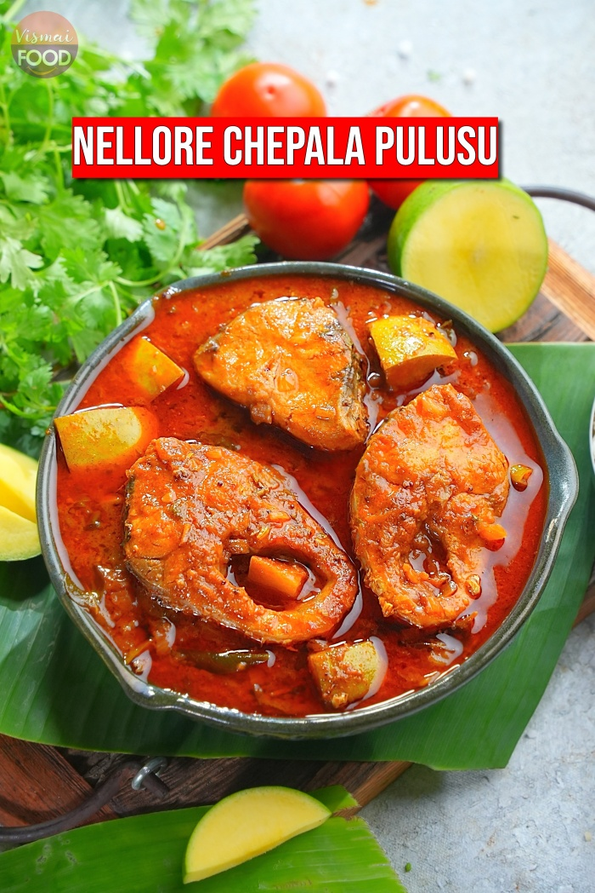

Nellore Chepala Pulusu - Nellore Fish Pulusu is prepared without adding ginger and garlic. This Pulusu is prepared by cooking fish in tamarind juice, tomato and raw mango pieces. It is an excellent side dish with boiled rice or Dosas!!!
The recipe seems simple but the Nellore Pulusu is a unique culinary experience to cook and to eat. The goodness of this dish lies in the balance of the sour ingredients. Given below are some great tips. Follow them and get the perfect blend of flavours and taste.
1.Usually the variety of fish that is used for the Pulusu would be Ravva (Indian Salmon), Botcha (Catla/Carp), Korrameenu (Murrel), or Nettili (Anchovy). Boneless fish is never to be used in this curry.
2.The fish should be fleshy and thick. Otherwise tender slim fish pieces tend to disintegrate during the process of cooking itself.
3. Many people do not like to eat the fish head. I do not myself relish it. But adding eh head pieces to the curry enhances the taste. So the suggestion is to cook the head along other pieces, and avoid eating those. They can be simply taken as additives that can be discarded.
1.After following the recipe faithfully, we may find that the salt and spice content is unsatisfactory. It could be less or more than necessary. It is a good idea to taste the curry at the end of the preparation.
2.If we find the curry to be bland because the sourness is less, it is better to boil a little Tamarind and adding it to the curry. Give the whole curry a boil after this addition.
3.If the sourness is more, it is a good idea to separately cook chilli powder and some salt in a little oil and adding to the curry.
1.Roast Rai, Methi seeds, Zeera and Dhaniya seeds and powder the whole. Add this powder to the Pulusu at the very end to get that special taste.
2.The powder may be difficult to make if the quantity is too less. A good idea is to roast a dry chilli along with the other spices so that grinding becomes easier. However you should take care to adjust the Chilli content in the main masalas.
For the Pulusu Powder:
For the Pulusu: